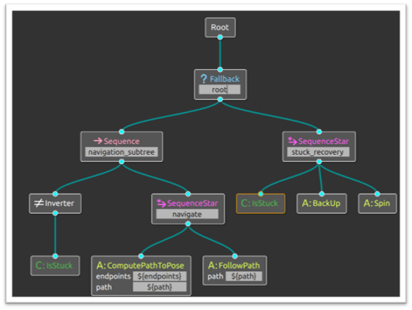

The Task-Scheduling System was implemented on the Eurobot 2024 competition robot. Its objective is to achieve the maximum possible score within 100 seconds while ensuring the robot returns to its designated position before the time limit. The system also incorporates adversarial awareness, enabling it to evaluate whether the opponent’s robot interferes with task execution. Based on this, it generates the optimal path planning strategy to maximize efficiency and secure victory.
Implement a Python-based decision tree that fuses multi-sensor feedback and performs opponent state estimation (position and velocity) to dynamically select optimal task targets and paths. A time stop-loss mechanism is incorporated to ensure the robot does the right action at the right time, preventing overtime penalties and minimizing half-completed, non-scoring tasks—ultimately improving decision robustness and scoring efficiency.
We integrated Groot to visualize our decision tree with a UI interface. This allows us to modify task goals or add new constraints more efficiently, while also making it easier to identify and debug issues within the system, thereby improving both maintainability and development speed.
